pdplot2.Rd`pdplot2` visualizes probability density (mass) functions in R. It requires parameters correctly specified for each distribution.
pdplot2(x mean, sd, size, prob, rate, lambda, location, scale, df, df1, df2,
shape, shape1, shape2, show.color=FALSE, line.selection=FALSE, linetype=NULL,
color.selection=FALSE, color=NULL, type=c("normal", "binomial", "exponential",
"poisson", "logistic", "cauchy", "chi-square", "beta", "gamma", "geometric",
"Student's t", "F"))
| x | vector of quantiles |
|---|---|
| mean | vector of means. |
| sd | vector of standard deviations. |
| location | location parameter. |
| scale | scale parameter. |
| size | number of trials (zero or more). |
| prob | probability of success on each trial. |
| df | degrees of freedom (non-negative, but can be non-integer). |
| df1, df2 | degrees of freedom. |
| lambda | vector of (non-negative) means. |
| rate | vector of rates. |
| shape | shape parameter. |
| shape1, shape2 | non-negative parameters of the Beta distribution. |
| show.color | If TRUE, pdplot2 uses colors for different distributions. Default is FALSE. |
| color.selection | If show.color=TRUE and color.selection=TRUE, users can supply a character vector of colors. Default is FALSE. |
| line.selection | If show.color=FALSE (default) and line.selection=TRUE, users can supply a character vector of linetypes. Default is FALSE. |
| color | A character vector of colors. |
| linetype | A character vector of linetypes. |
H. Wickham. ggplot2: Elegant Graphics for Data Analysis. Springer-Verlag New York, 2016.
Karthik Ram and Hadley Wickham (2018). wesanderson: A Wes Anderson Palette Generator. R package version 0.3.6. https://CRAN.R-project.org/package=wesanderson
R Core Team (2020). R: A language and environment for statistical computing. R Foundation for Statistical Computing, Vienna, Austria. URL https://www.R-project.org/.
Tahir Enes Gedik
This function uses only the probability density/mass functions in base R (stats package). It also requires ggplot2 package.
# Plotting several normal density functions pdplot2(seq(-6,6,0.01), mean=c(0,0), sd=c(1,2), type="normal")